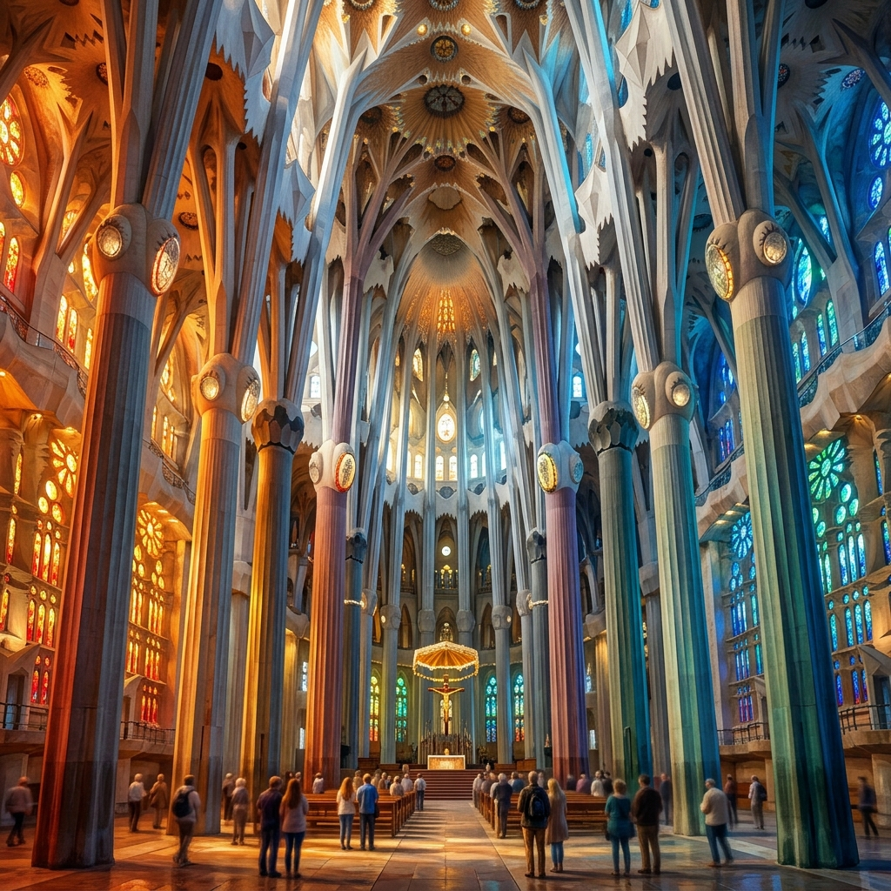

我讓世界與天主
重新整理我
2026 從露德到世界盡頭：一場身體、靈魂與信仰的生命整理
這不是一次單純的觀光打卡，而是一場帶著真實自我、離開熟悉之地的靈魂朝聖。
我走向露德，在岩洞與泉水中交付脆弱；走入巴塞隆納，在未完工的聖家堂見證生命的慢工建造；
我登上 Montserrat 鋸齒山，在黑面聖母前重拾大山般的穩定；踏上庇里牛斯山，用身體磨練界線的智慧；
我更走向極地格陵蘭的荒涼冰川與冰島的水火裂谷，學習在世界的邊緣、生命的破裂之處見證新地貌的創造。
「我不是只去看世界。我讓世界照見我。我讓天主重新整理我。」
露德 Lourdes
我把脆弱帶到聖母面前

Massabielle 岩洞：邊緣之地的恩寵
露德的顯現沒有發生在金碧輝煌的聖殿，而是發生在 Gave 河邊的 Massabielle 岩洞。這裡曾是貧窮的伯爾納德撿拾柴火、謀生掙扎的地方。
「岩洞不等於負面情緒，而是代表我生命中幽暗、貧窮、隱藏、被忽略，但天主願意進入並顯現的地方。天主不只在莊嚴體面的地方臨在，祂也進入我的恐懼、焦慮與真實中。我不需要完美才去朝聖，我帶著破碎，聖母媽媽依然在洞穴溫柔地呼喚我。」

聖女伯爾納德：在微小中保持真實
天主沒有挑選有權威的神父或學者，而是選了貧窮、體弱的女孩伯爾納德。她的意義在於，她在自己的微小中保持了極度的真實與單純。看見什麼就說什麼，不誇大，不討好，也不把自己當成主角。
「我不需要把自己看成特別偉大或特別倒楣的人，我只是一個正在被天主帶領的人。不用問我夠不夠資格，而是問我是否願意忠實。真正的勇敢不是沒有恐懼，而是帶著恐懼，依然願意把手交給天主，邁步前行。」
醫治的泉水
自第九次顯現以來，泉水從昏暗的岩石泥土中流出。泉水代表恩寵，也象徵醫治。這不是魔法，而是天主在人最缺乏、最黑暗的地方，開闢出生生不息的清泉。
苦路默想：同行受難
露德的苦路是身體與心靈的祈禱之路。跌倒不是失敗，接受別人幫忙背負十字架也不是軟弱。苦路提醒我們，耶穌陪我們穿越重擔，痛苦不是最後一句，復活與光明才是。
燭光遊行：黑暗中的光
當夜幕低垂，成千上萬朝聖者手持微弱燭火，匯聚成光的河流。這是一幅美麗的畫面：信仰不是假裝生命中沒有黑暗，而是當黑暗降臨時，我們依然願意共同望向那道溫柔的光。

巴塞隆納 Barcelona
聖家堂：生命在建造中

聖家堂：尚未完成的生命殿堂
巴塞隆納的聖家堂是一座施工了百年的教堂。高第並非在此透過石頭炫技，而是以建築訴說深邃的信仰。教堂內高聳入雲的石柱宛如森林中的巨木，陽光透過色彩繽紛的玻璃，將溫暖的橘紅光與深沉的藍綠光交織灑落。
「看著那座仍在施工的巍峨高塔，我突然明白：我的生命也像聖家堂一樣，還在施工中。尚未完成並不等於失敗。天主正在慢慢建造我。我不必急著在今天完美，而是相信祂的工藝，容許自己有尚未完工的鷹架，在恩寵的光照下繼續成長。」
蒙塞拉特 Montserrat
我在山中學習安靜、交託與站穩

鋸齒山與本篤會修道院
Montserrat 意為「鋸齒之山」，這座壯麗的奇山宛如大自然塑造的巨大聖殿。本篤會修道院在此佇立千年，修士們以祈禱、工作、規律、沉默與接待，用神聖的秩序保護內心的自由。
「上山不是征服，而是讓心在宏偉的創造前變得謙卑。當我離開平地的喧囂，走進山與修道院的祈禱鐘聲裡，本篤會的規律教導我：不要用更多焦慮的活動填滿時間，而是用祈禱和秩序，保護心中的平安與自由。」

黑面聖母 La Moreneta：山中的母親
坐在山中的黑面聖母不是可愛甜美的塑像，而是一位莊嚴、穩定、充滿古老智慧的母親。她抱著基督，也將疲憊的朝聖者帶向基督的懷抱。
「露德教我：我可以在脆弱中被看見、被撫慰。Montserrat 則教我：我可以在山上重新站穩。凝視著黑面聖母安詳的面容，我把漫長旅途中的恐慌、擔憂與我所深愛的人，全部交託給她。因為我知道，她會用大山般的穩定接住我。」
兩位聖母，兩種整理
在脆弱中得到醫治，在山頂上重獲力量
露德 Lourdes
脆弱與醫治- 靈性空間： 岩洞、醫治泉水、病人朝聖地
- 聖母形象： 洞穴中溫柔呼喚的母親
- 內在方向： 承認脆弱、交託眼淚、尋求安慰與醫治
- 靈修核心句： 「在露德，我不必假裝堅強。」
蒙塞拉特 Montserrat
堅固與重新站穩- 靈性空間： 鋸齒奇山、本篤會修道院、黑面聖母
- 聖母形象： 山中莊嚴守護、安祥穩定的母親
- 內在方向： 上山尋求安靜、建立心靈秩序、重獲力量
- 靈修核心句： 「在 Montserrat，我讓山與修道院帶我安靜。」
朝聖的生命整理架構
希臘式反省：理解自己
這趟旅程不是逃避，而是深入靈魂。去追問我是誰、我如何面對恐慌、原生家庭與思念。不急著修好自己，而是先溫柔地看見自己。
羅馬式秩序：保護自己
縝密的行程、火車票、彌撒時間與風險管理，並非焦慮控制，而是用智慧與界線建立可持續的節奏，保護自己的自由與心靈。
基督信仰：交給天主
不是把人生整理得完美無瑕才交出，而是在混亂、不完整、害怕與未完成中，依然相信天主早已在我生命中工作。主，剩下的我交給祢。